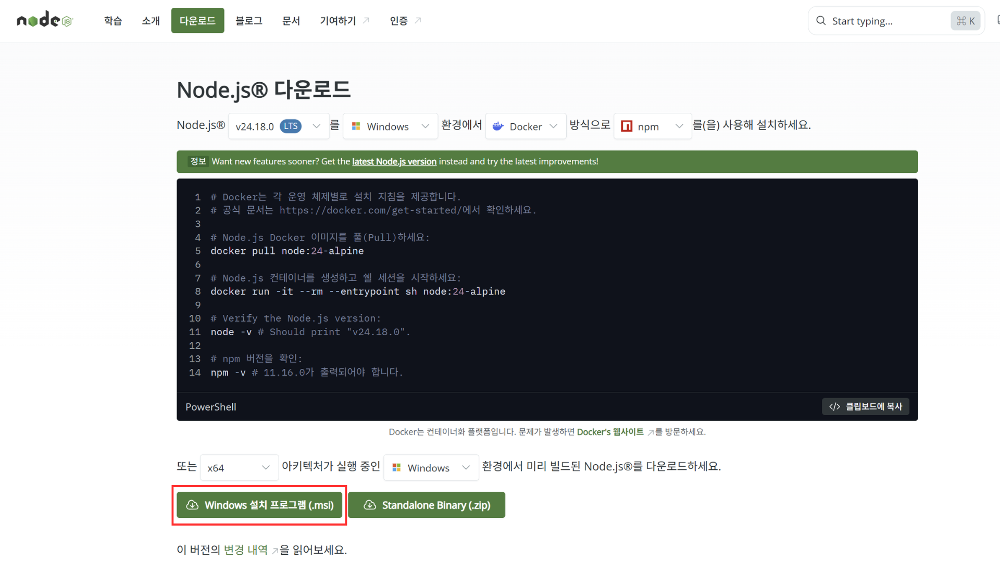

Day 1 · AI 개념과 개발 환경 구축 — 실습
이론 문서에서 익힌 개념을 실제 명령어·프롬프트로 따라 하는 실습 문서입니다. STEP 1부터 순서대로 진행하십시오.
개념이 헷갈리면 각 단계의 "관련 이론" 링크로 이론 문서를 참고하세요.
GitHub(코드 저장), Vercel(배포), OpenAI(API Key)를 순서대로 준비하면 뒤 실습에서 멈추지 않습니다.
- GitHub 가입
github.com에 접속해 우측 상단 "Sign up"을 클릭한 뒤 순서대로 입력합니다.(구글 계정이나 애플 계정으로도 가입할 수 있습니다 — 이 경우 "Continue with Google" 또는
"Continue with Apple"을 선택하면 이메일·비밀번호 입력 없이 해당 계정으로 바로 가입됩니다.)- 이메일을 입력하고 Continue를 누릅니다.
- 비밀번호를 입력하고 Continue를 누릅니다.
- 사용자 이름(username, 영문·숫자)을 입력하고 Continue를 누릅니다.
- 사람 확인(퍼즐)을 풀고, 입력한 이메일로 온 인증 코드를 입력하면 가입이 완료됩니다.
- Vercel 가입 (GitHub 연동)
vercel.com에 접속해 우측 상단 "Sign Up"을 클릭합니다.
- 계정 유형에서 개인 실습용 "Hobby"를 선택하고 이름을 입력한 뒤 Continue합니다.
- "Continue with GitHub" 버튼을 클릭합니다.
- GitHub 로그인 화면이 뜨면 로그인하고, "Authorize Vercel"을 클릭해 연동을 허용합니다.
- Vercel 대시보드가 열리면 가입이 완료된 것입니다.
- OpenAI 결제 등록 및 API Key 발급
platform.openai.com에 로그인(또는 가입)합니다. OpenAI API는 사용한 만큼 선불 크레딧에서 차감되는 방식이라,
키를 발급하기 전에 먼저 결제 수단을 등록하고, 최소 금액을 충전해야 키가 정상 동작합니다.- 좌측 하단(또는 우측 상단) 톱니바퀴 Settings → "Billing"으로 이동합니다.
- "Add payment details"(결제 수단 추가)를 클릭하고, 개인/법인 카드 정보를 입력해 등록합니다.
- 충전할 금액을 입력합니다 — 실습용으로는 최소 금액인 $5면 충분합니다.
- 자동 충전(정기 결제, "Enable auto recharge") 옵션은 반드시 체크 해제합니다.(잔액이 떨어질 때 카드에서 자동으로 다시 결제되는 것을 막기 위함입니다.)
- 결제를 완료하고 크레딧(잔액)이 충전되었는지 확인합니다.
- 좌측 메뉴에서 "API keys"로 이동해 "Create new secret key" 버튼을 클릭합니다.
- 키 이름을 입력하고 "Create secret key"를 클릭합니다.
- 표시된
sk-로 시작하는 키의 "Copy"를 눌러 복사한 뒤 안전한 곳에 보관하고 "Done"을 누릅니다.(이 화면을 벗어나면 키를 다시 볼 수 없습니다.)

그림 1-1. Billing의 "Add payment details"·$5 충전(자동 충전 해제) 화면과 "Create new secret key" 팝업
Claude를 Pro로 구독하고 앱을 설치한 뒤, 로컬 작업 폴더로
hello-page를 지정해 Claude가 그 폴더에 직접 파일을 만들 수 있게 합니다.(앞으로의 모든 실습은 이 Claude Desktop 환경에서 진행합니다.)
- Claude 가입 및 Pro 구독
claude.ai에서 계정을 만든 뒤 아래 순서로 Pro를 구독합니다.(Free로도 진행은 가능하지만, 사용량 제한이 빡빡해 실습에는 Pro를 권장합니다.)
- 로그인 후 화면 좌측 하단의 이름을 클릭하고 "Settings"를 선택합니다.
- "Billing" 탭으로 이동해 "Upgrade plan"을 클릭합니다.
- Pro 플랜을 선택하고 결제 주기(월간/연간)를 고릅니다.
- 카드 정보를 입력하고 "Subscribe"를 눌러 구독을 완료합니다.
- Claude Desktop 설치 및 로그인
내 컴퓨터에 Claude 데스크톱 앱을 설치합니다.
- 브라우저에서 claude.ai/download 에 접속합니다.
- 운영체제에 맞는 설치 파일을 내려받습니다.
- Windows:
.exe설치 파일 - macOS:
.dmg파일 (Apple 실리콘·인텔 자동 감지)
- Windows:
- 내려받은 파일을 실행해 안내에 따라 설치를 완료합니다.
- Claude Desktop을 실행하고, 앞에서 Pro를 구독한 계정으로 로그인합니다.
- 실습용 작업 폴더 만들기
Claude가 파일을 만들어 둘 전용 폴더를 하나 준비합니다. 이 폴더만 작업 폴더로 지정할 것이므로 반드시 따로 만듭니다.
- 파일 탐색기(Windows) 또는 Finder(macOS)에서 홈 디렉토리(내 사용자 폴더)로 이동합니다.(예: Windows
C:\Users\사용자명, macOS/Users/사용자명) - 그 안에 실습용 새 폴더를 만들고 이름을
hello-page로 짓습니다.(한글·공백 없는 영문 이름을 권장합니다. 전체 경로 예:C:\Users\사용자명\hello-page)
- 파일 탐색기(Windows) 또는 Finder(macOS)에서 홈 디렉토리(내 사용자 폴더)로 이동합니다.(예: Windows
- Claude Desktop에 로컬 작업 폴더 지정
Claude Desktop이 방금 만든
hello-page폴더에서 파일을 직접 만들고 수정할 수 있도록, 이 폴더를 작업 폴더로 지정합니다.- Claude Desktop 좌측 하단(또는 우측 상단)의 Settings(설정)를 엽니다.
- 로컬 파일 접근 설정 화면으로 이동합니다.(버전에 따라 "Connectors", "Extensions", 또는 "파일/폴더 접근" 등으로 표시됩니다.)
- 목록에서 "Filesystem"(로컬 폴더 접근)을 켜고, 접근을 허용할 폴더를 물으면 앞서 만든
hello-page폴더를 선택합니다.(여러 폴더가 아니라 이 실습 폴더 하나만 지정합니다.) - 설정을 저장하고 대화창으로 돌아오면, 이제 이 폴더를 대상으로 작업할 수 있습니다.
hello-page)만 지정하십시오. 내 문서·바탕화면 전체나 시스템 폴더를 지정하면 Claude가 그 폴더의 파일도 다룰 수 있게 되어 위험합니다.
hello-page 폴더에 파일이 직접 만들어지는 방식입니다.
터미널에서 버전이 출력되는지로 설치를 확인합니다.
- Node.js 설치
브라우저에서 nodejs.org에 접속한 뒤, 아래 순서대로 내려받아 설치합니다.
- 첫 화면 가운데의 "Get Node.js"(초록색 LTS 안정판) 버튼을 클릭합니다.
- 다운로드 화면에서 아키텍처 드롭다운(보통 x64)과 운영체제 드롭다운을 확인한 뒤, 초록색 다운로드 버튼을 누릅니다.
- Windows: 운영체제가 Windows인지 확인하고 초록색 "Windows 설치 프로그램 (.msi)" 버튼을 클릭합니다.(옆의 "Standalone Binary (.zip)"가 아니라 .msi를 누릅니다.)
- macOS: 운영체제 드롭다운을 macOS로 바꾸고, 아키텍처를 Apple 실리콘(M1~M4) 맥은 arm64·인텔 맥은 x64로 고른 뒤 초록색 "macOS 설치 프로그램 (.pkg)" 버튼을 클릭합니다.
- 내려받은 설치 파일을 더블클릭 → 마법사에서 Next → 라이선스 동의(I accept) → 설치 경로 기본값 유지 → Install → 완료 후 Finish를 눌러 마칩니다.

그림 2-1. "Get Node.js" 클릭 후 나오는 화면 — 초록색 "Windows 설치 프로그램 (.msi)" 버튼 - Git 설치
git-scm.com/downloads에 접속해 아래 순서로 설치합니다.
- git-scm.com/downloads 접속 후 상단의 운영체제 탭에서 "Windows"(기본 선택)에 있는지 확인합니다.
- 화면에 맞는 파일을 내려받습니다.
- Windows: 파란색 "Git for Windows/x64 Setup" 링크(또는 상단 문장의 파란색 "Click here to download")를 클릭하면
Git-XX-64-bit.exe가 내려받아집니다. - macOS: 상단 "macOS" 탭을 눌러 안내를 따릅니다. 터미널에서 이미
git --version이 동작하면 별도 설치가 필요 없을 수 있습니다.
- Windows: 파란색 "Git for Windows/x64 Setup" 링크(또는 상단 문장의 파란색 "Click here to download")를 클릭하면
- 내려받은 설치 파일을 실행합니다. Windows 마법사는 선택 항목이 많지만 모두 기본값 그대로 Next를 눌러 진행하고, 마지막에 Install → Finish합니다.

그림 2-2. Windows 탭의 파란색 "Git for Windows/x64 Setup" 링크 - 터미널에서 버전 확인
터미널(Windows는 PowerShell, macOS는 터미널)을 열고 아래를 입력합니다. 버전 번호가 나오면 정상 설치된 것입니다.
node -v npm -v git --version
▲ 예:
v20.x.x,10.x.x,git version 2.x.x - Git 최초 설정
커밋 이력에 기록될 이름과 이메일을 한 번만 등록합니다. 이메일은 STEP 1에서 만든 GitHub 계정과 동일하게 맞추는 것을 권장합니다.
git config --global user.name "본인 이름" git config --global user.email "본인이메일@example.com"
STEP 2에서 작업 폴더로 지정한
hello-page 폴더를 향해, Claude Desktop 대화창에 "이런 페이지를 만들어 줘"라고 말하는 것이 전부입니다.
- Claude Desktop에서 새 대화 시작
Claude Desktop을 실행하고 새 대화(New chat)를 엽니다. STEP 2에서
hello-page를 작업 폴더로 지정했으므로, 이 대화에서 하는 지시는 그 폴더에 반영됩니다.(폴더가 지정되어 있지 않으면 STEP 2의 "로컬 작업 폴더 지정"을 먼저 확인하세요.) - .env 파일 만들고 OpenAI API Key 넣기
이후 실습에서 프로그램이 OpenAI를 호출할 때 쓸 API Key를 미리 준비합니다. 먼저 아래 프롬프트로
프롬프트 ①.env파일을 만들어 달라고 요청합니다.hello-page 폴더에 .env 파일을 만들어줘. 그 안에 OPENAI_API_KEY 항목을 넣어줘. 그리고 .gitignore 파일에도 .env를 추가해서 API Key가 실수로 업로드되지 않게 해줘.
Claude Desktop이 파일을 만들어도 되는지 물으면 "허용(Allow)"을 누릅니다. 이어서 아래처럼 STEP 1에서 발급한
프롬프트 ②sk-로 시작하는 키를 알려주면, Claude가.env에 값을 채워 넣습니다.OPENAI_API_KEY 값은 sk-여기에-내-키를-붙여넣기 야. .env 파일의 OPENAI_API_KEY에 이 값을 넣어줘.
.env에 넣은 API Key는 비밀번호와 같습니다. 위 프롬프트처럼.gitignore에.env를 반드시 추가해, GitHub 등 공개 저장소에 키가 올라가지 않도록 하십시오. (개인 실습용 대화에 키를 붙여넣는 것은 괜찮지만, 키는 타인과 공유하지 마세요.) - 자연어로 페이지 요청
아래 프롬프트를 Claude Desktop 대화창에 그대로 붙여넣습니다. 내용은 본인 소개에 맞게 바꿔도 됩니다.
프롬프트hello-page 폴더에 자기소개 웹페이지를 만들어줘. index.html 파일 하나에 제목, 짧은 소개 문단, 그리고 좋아하는 것 3가지를 목록으로 넣어줘. 색상은 파란색 계열로 깔끔하게 디자인해줘.
- 파일 생성 승인
Claude가
hello-page폴더에index.html을 만들려고 하면, Claude Desktop이 권한을 묻습니다. 내용을 확인하고 "허용(Allow)"을 누르면 파일이 실제로 만들어집니다.(매번 묻는 것이 번거로우면 "이 대화에서 항상 허용" 같은 옵션을 선택할 수 있습니다.) - 결과 확인
hello-page폴더에 생긴index.html을 더블클릭해 기본 브라우저로 엽니다. 요청한 대로 화면이 나오면 성공입니다.
그림 4-1. 브라우저로 연 index.html — 제목·소개 문단·목록이 표시된 화면
- 화면·기능 수정 요청
STEP 4에서 이어 온 Claude Desktop 대화창에 아래 프롬프트를 입력해 디자인과 기능을 함께 수정합니다.
프롬프트방금 만든 index.html을 이렇게 바꿔줘. 1. 배경을 밝은 회색으로 바꾸고 제목을 가운데 정렬해줘. 2. 맨 아래에 "문의하기" 버튼을 하나 추가하고, 누르면 "감사합니다!"라는 알림창이 뜨게 해줘.
- 수정 결과 확인
브라우저에서
index.html을 새로 고침(F5)해 바뀐 화면과 버튼 동작을 확인합니다.
이제 완성된 페이지를 인터넷에 배포합니다. 배포 방법은 두 가지가 있으니, 둘 중 편한 방법 하나를 선택해 진행하면 됩니다.
- GitHub에 새 저장소(repository) 만들기
STEP 1에서 만든 GitHub 계정으로 로그인한 뒤, 코드를 올려 둘 빈 저장소를 하나 만듭니다.
- github.com 우측 상단의 "+" 아이콘을 클릭하고 "New repository"를 선택합니다.
- Repository name에
hello-page를 입력합니다. - 공개 범위는 "Public"을 선택합니다.(README 등 다른 항목은 체크하지 않고 비워 둡니다.)
- "Create repository"를 클릭합니다. 다음 화면에 나오는 저장소 주소(
https://github.com/사용자명/hello-page.git)를 복사해 둡니다.
- index.html을 GitHub에 업로드하기
터미널 없이 GitHub 사이트에서 파일을 바로 올릴 수 있습니다. 방금 만든 빈 저장소 화면에서 진행합니다.
- 저장소 화면의 "Add file" → "Upload files"를 클릭합니다.
hello-page폴더에서index.html파일을 끌어다 놓거나 "choose your files"로 선택합니다.(⚠️.env파일은 올리지 마세요. API Key가 노출됩니다.index.html만 올립니다.)- 아래 "Commit changes" 버튼을 눌러 업로드를 확정합니다.
- 저장소에
index.html이 올라온 것을 확인합니다.
- Vercel 사이트에서 저장소 연결·배포
vercel.com 대시보드에서 GitHub 저장소를 그대로 불러와 배포합니다.
- vercel.com에 로그인하고 "Add New…" → "Project"를 클릭합니다.
- GitHub 저장소 목록에서
hello-page를 찾아 "Import"를 클릭합니다.(목록에 없으면 "Adjust GitHub App Permissions"로 저장소 접근을 허용합니다.) - 설정은 기본값 그대로 두고 "Deploy"를 클릭합니다.
- 잠시 기다리면 배포가 완료되고 축하 화면과 함께 공개 주소가 나타납니다.
- 공개 주소 접속
Vercel이 만들어 준
https://hello-page-xxxx.vercel.app주소로 접속해, 내가 만든 페이지가 인터넷에 공개된 것을 확인합니다. 이 주소는 다른 사람에게 공유해도 그대로 접속됩니다.이 방식은 GitHub 저장소와 연결되어 있어, 앞으로 코드를 수정해 GitHub에 다시 올리기만 하면 Vercel이 자동으로 다시 배포합니다.
- Vercel CLI 설치 및 로그인
터미널(Windows는 PowerShell, macOS는 터미널)을 열고, 아래 명령으로 Vercel 도구를 설치한 뒤 STEP 1에서 만든 계정으로 로그인합니다.
npm install -g vercel vercel login
- 배포 실행
같은 터미널에서
hello-page폴더로 이동한 뒤 아래를 실행합니다. 안내 질문에는 대부분 Enter(기본값)로 진행합니다.(폴더 이동:cd hello-page. 이미 그 폴더에 있으면 생략합니다.)# 미리 보기 배포 vercel # 최종(정식) 배포 vercel --prod
- 공개 주소 접속
터미널에 출력된
https://hello-page-xxxx.vercel.app주소를 브라우저에 입력해, 내가 만든 페이지가 인터넷에 공개된 것을 확인합니다. 이 주소는 다른 사람에게 공유해도 그대로 접속됩니다.
Day 1 · AI 개념과 개발 환경 구축 — 실습
← Day 1 이론 문서로 돌아가기